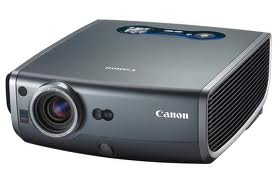
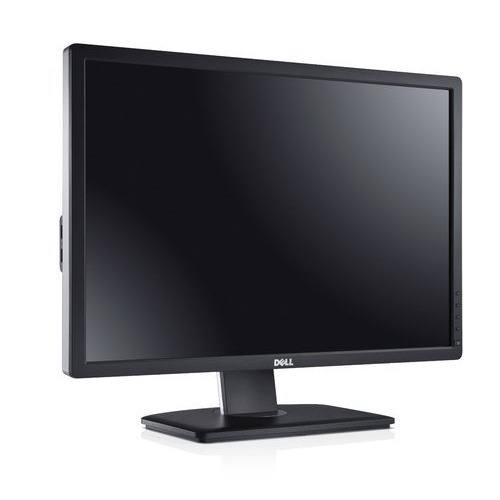
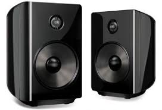

OUTPUT DEVICES
An output device is any device used to send data from a computer to another device or user.
Most computer data output that is meant for humans is in the form of audio or video.
Thus, most output devices used by humans are in these categories.
Examples include monitors, projectors, speakers, headphones and printers.
